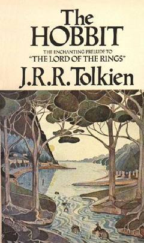

THBilbo Bagginsning ajdarho xazinasini izlab boshlagan hayajonli sarguzashtlari haqidagi klassik asar.
Bilbo Baggins is a respectable hobbit who lives a quiet life until the wizard Gandalf and a group of dwarves arrive to recruit him for a dangerous quest. Together, they journey to the Lonely Mountain to reclaim a stolen treasure from the dragon Smaug. Along the way, Bilbo encounters mysterious creatures and discovers a magical ring that changes his life forever.